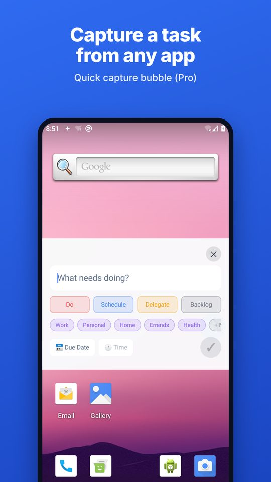

Urutkan daftar tugasmu menurut mendesak dan penting
Matriks Eisenhower gratis siap cetak, panduan singkat cara memakainya, dan aplikasi Android privat yang memilahkan tugas untukmu.
Dapatkan aplikasinya di Google Play Unduh template siap cetakApa itu matriks Eisenhower?
Matriks Eisenhower adalah cara memutuskan apa yang dikerjakan berikutnya dengan menanyakan dua hal tentang setiap tugas: apakah mendesak, dan apakah penting? Jawabannya menempatkan tugas di salah satu dari empat kotak.
Namanya diambil dari Dwight D. Eisenhower, yang dikaitkan dengan ucapan “Yang penting jarang mendesak, dan yang mendesak jarang penting.” Stephen Covey kemudian mempopulerkan empat kotak ini lewat buku The 7 Habits of Highly Effective People.
Cara memakainya dalam lima menit
- Tulis semuanya. Kosongkan isi kepalamu ke satu daftar sebelum memilah apa pun.
- Tanyakan dulu, “Apakah ini penting?” Penting berarti memajukan sesuatu yang kamu pedulikan. Rasa mendesak lebih mudah terasa, jadi nilailah belakangan.
- Lalu tanyakan, “Apakah ini mendesak?” Mendesak berarti ada kerugian nyata kalau tidak segera dikerjakan.
- Beri tanggal pada setiap tugas Jadwalkan. Kotak ini berisi hal yang paling penting dan tidak pernah berteriak. Tanpa tanggal, tugas ini tidak akan dikerjakan.
- Tinjau sekali sehari. Untuk setiap tugas yang terlambat, putuskan: selesai, hari ini, hari lain, atau batalkan.
Template gratis siap cetak
Satu halaman, empat kotak, ruang untuk menulis. Cetak, atau simpan di mejamu sebagai lembar harian.
Gratis untuk penggunaan pribadi dan di kelas. Tanpa perlu email.
Aplikasi Android
Matriks Eisenhower: Tugas memilahkan tugas untukmu. Tandai tugas sebagai mendesak, penting, atau keduanya, dan tugas itu masuk ke kotak yang tepat.



Gratis
- Matriks, dengan tampilan kalender harian dan bulanan
- Widget layar utama untuk tugas hari ini dan tambah cepat
- Ucapkan tugas, dan tanggal serta jam terisi sendiri
- Subtugas, tugas berulang, label, dan pengingat
- Tinjauan harian yang membahas tugas terlambat satu per satu
- Ekspor dan impor datamu
Pro, sekali bayar
- Gelembung mengambang untuk mencatat tugas dari dalam aplikasi lain mana pun
- Tambah banyak tugas: tempel daftar dan pilah ke dalam kotak
- Cadangan otomatis ke folder pilihanmu
Pro bisa dicoba gratis selama 7 hari tanpa kartu dan tanpa daftar. Tidak ada langganan.
Privat sejak awal
Tanpa akun, tanpa iklan, tanpa pelacakan, dan tanpa analitik. Tugasmu tetap di ponselmu kecuali kamu memilih untuk mencadangkan atau membagikannya. Baca kebijakan privasi (dalam bahasa Inggris).
Dapatkan aplikasinya di Google Play
Dari blog
Artikel blog ditulis dalam bahasa Inggris.
- Aplikasi matriks Eisenhower untuk Android: apa yang perlu dibandingkan
- Rencana Tahun Baru yang bertahan lewat Januari
- Cara membereskan daftar tugas yang terlambat
- 50 tugas nyata yang dipilah ke empat kotak
- Mendesak atau penting? Sepuluh tugas yang sering salah dipilah
- Matriks Eisenhower untuk pelajar di musim ujian
Pertanyaan
Apakah aplikasinya benar-benar gratis?
Ya. Seluruh metode, widget, pengingat, tugas berulang, dan ekspor gratis selamanya. Pro adalah pembelian sekali yang opsional untuk beberapa fitur penghemat waktu.
Apakah perlu akun?
Tidak. Tidak ada yang perlu didaftarkan dan tidak ada yang dikirim ke server.
Apakah ada versi iPhone?
Belum. Untuk saat ini hanya tersedia di Android.
Apa bedanya mendesak dan penting?
Tugas mendesak punya kerugian nyata kalau tidak segera dikerjakan. Tugas penting memajukan sesuatu yang kamu pedulikan. Banyak tugas hanya salah satunya, dan itulah inti dari matriks ini.
Apa yang masuk ke kotak keempat?
Tugas yang tidak mendesak dan tidak penting. Ada yang menyebut kotak ini Hapus atau Eliminasi. Aplikasi ini menyebutnya Nanti, karena banyak di antaranya layak dilihat sekali lagi sebelum dilepaskan.
Bagaimana cara menghubungi?
Kirim email ke eisenhower.mtrx@gmail.com.